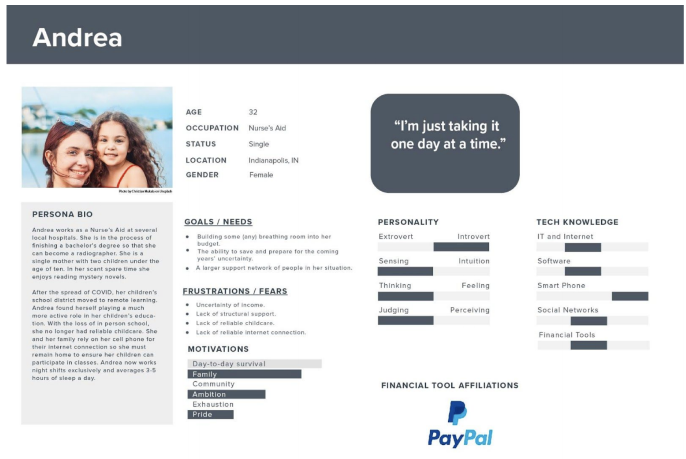
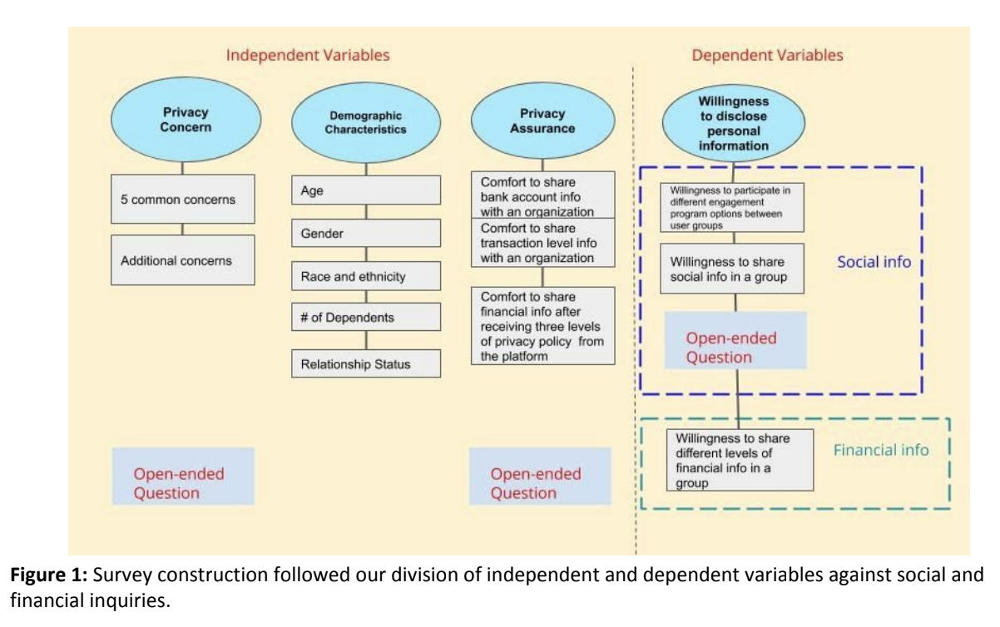
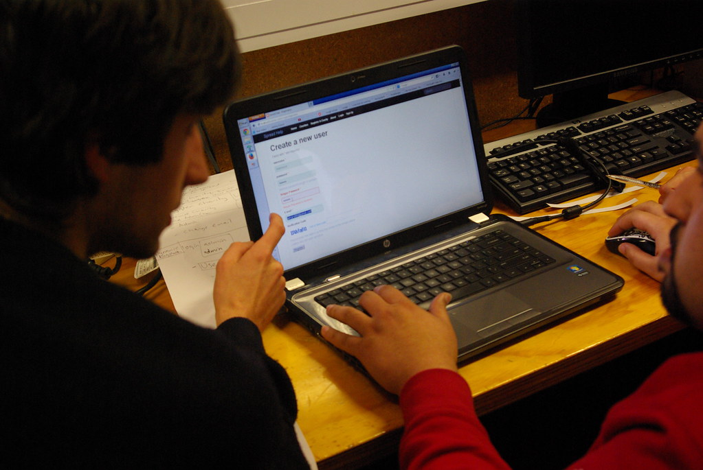

Family Independence Initiative
Project Details

Timeline
Four months with three UMSI grad students.

Product Goals
A digital financial platform with social connectivity and financial tools.

Project Goals
Assess user needs for accessible website redesign

Systems Used
Lucidcharts, Otter.ai, Qualtrics
Process |
|||
I. Needs Assessment |
II. Usability Evaluation |
||
Interviews & Mapping |
Survey |
User Testing |
|
We interviewed four users to determine initial findings about the system and highlighted pain points on an interaction map. |
After releasing a survey to more than 400 users, we extrapolated on the specific privacy and social features that users cared about the most. |
Following a heuristic examination, we conducted multiple usability tests with additional users to explore how severe accessibility issues and information architecture processes were to the overall quality of the product. |
|
Interviews & Mapping
Process
- 4 interviews with novice and experienced users
- Creation of an interaction map
- Generation of three user personas
Findings
We found, through the generation of an interaction map and persona,
that FII’s users often worried about the privacy of their transactions on a non-profit’s webpage.
Lessons Learned
I learned the importance of flexibility during interviews and
gained the ability to synthesize key facts out of a diverse group of participants.

Survey
Process
- Generated a survey protocol for feedback
- Sent out a finalized survey to 400 users
- Received 78 surveys for analysis on Qualtrics
Findings
Through statistical analysis, we concluded that information exposure and a lack of trust for free services were among the most pressing issues for users’ privacy.
Lessons Learned
The survey process taught me the distinction between and limitations of interviews and surveys.

User Testing
Process
- Created pilot study, tasks, and logging forms
- Hosted four usability tests.
Findings
Users were often confused as to the purpose of a particular page.
We also found several severe issues with transaction mechanisms.
Lessons Learned
Language clarity and navigational consistency are seemingly
simple aspects on a site, but can create severe oversights for stakeholders.
